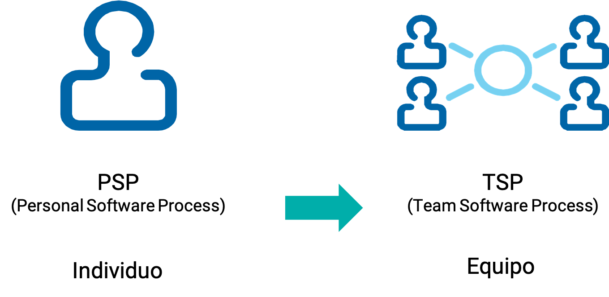
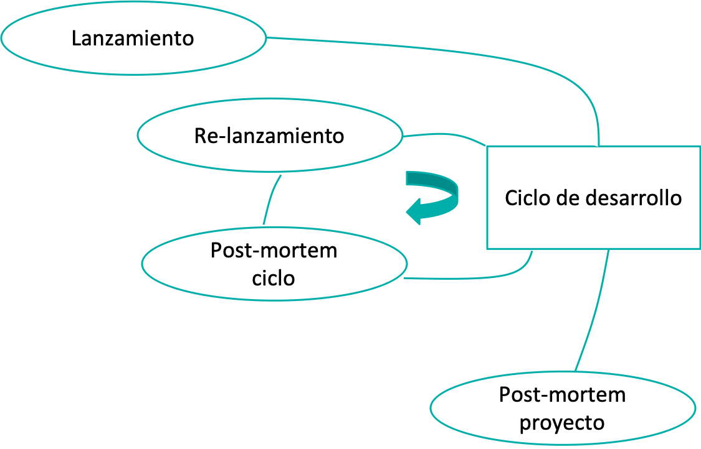
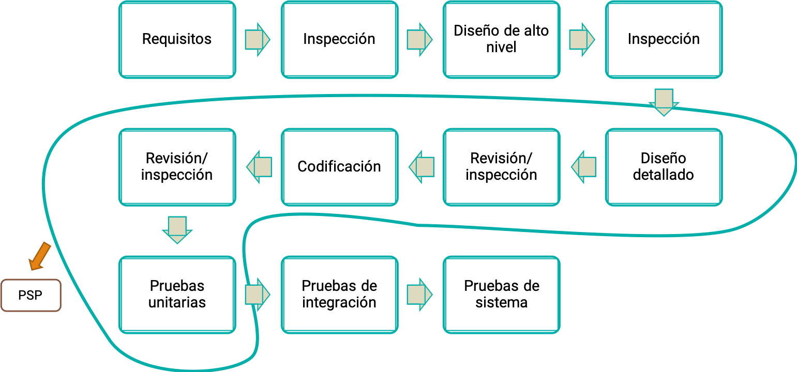
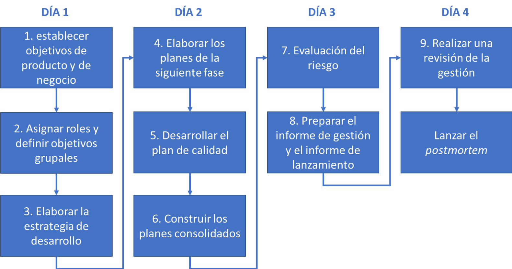
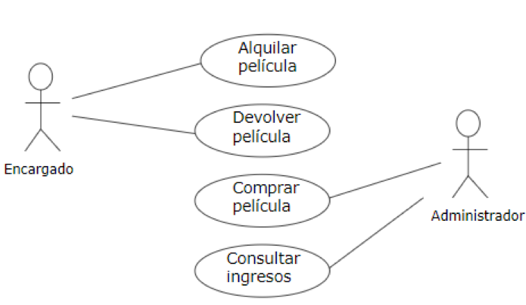
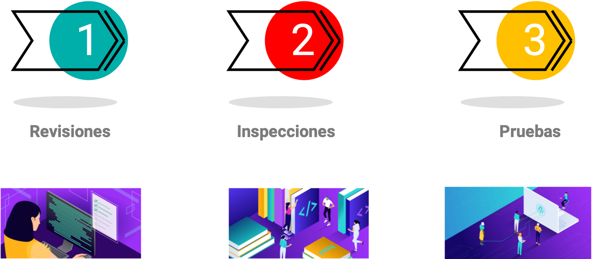
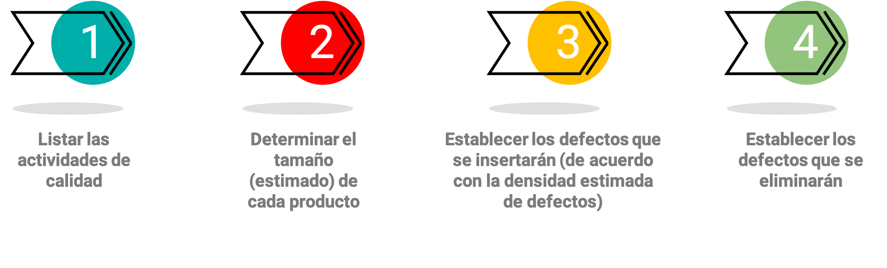
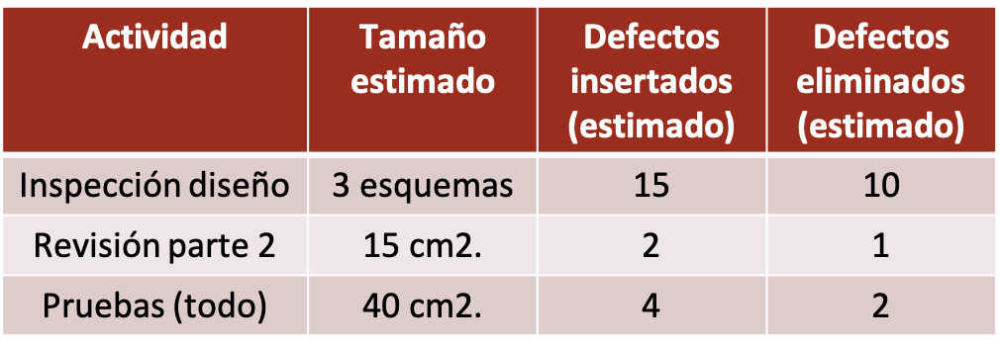
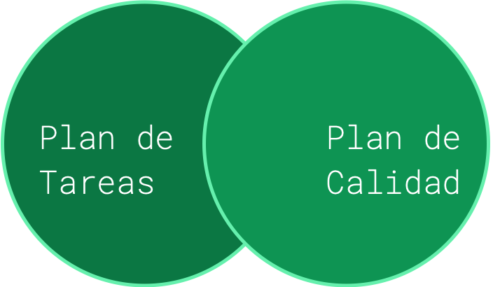

Integrantes y roles de un equipo de desarrollo#

¿Por qué trabajar en equipo?#
💡
El desarrollo de software no es solo codificar
💡
Se mide el comportamiento del equipo en conjunto, no individual
💡
Formar un equipo sólido requiere tiempo
💡
Todos participan en el proceso de implementación
Roles del equipo#
Coach:#
Pertenece al entorno académico (Docente)


Actividades#
Definir los criterios de evaluación.
Guiar la asignación de roles.
Verificar el cumplimento de las actividades por roles.
Evaluar la calidad de las entregas, de acuerdo con lo planeado.
Lider
El líder conduce el grupo y se asegura de que todos los integrantes reportan sus datos del proceso y terminan su trabajo como se planeó.

Actividades
Construir y mantener un equipo efectivo.
Motivar a los miembros del equipo para que trabajen de manera entusiasta y dedicada en el proyecto.
Resolver los conflictos del grupo.
Mantener informado al instructor sobre el progreso en el proyecto.
Ser un facilitador efectivo en las reuniones de grupo del proyecto.
Administrador de desarrollo
Liderar y guiar el grupo en la definición, diseño, desarrollo y pruebas del producto.

Actividades
Producir un producto de calidad superior
Usar totalmente las capacidades y habilidades de los miembros del grupo
Administrador de planeación
Dar soporte y guía al grupo en la tareas de planeación y seguimiento del proyecto.

Actividades
Producir un plan completo, preciso y exacto del plan del equipo y de cada uno de sus miembros.
Reportar con exactitud el estado del proyecto cada semana.
Administrador de calidad
Encargado de dar soporte, definir las necesidades del proceso, hacer el plan de calidad y hacer seguimiento al proceso y a la calidad del producto.

Actividades
Todos los miembros del equipo reportan adecuada y exactamente la información del proceso.
El equipo sigue fielmente el proceso y obtiene un producto de calidad.
Todas las inspecciones del equipo son adecuadamente moderadas y reportadas.
Todas las reuniones del equipo son adecuadamente reportadas y los reportes se guardan en el sitio del proyecto.
Administrador de soporte
Dar soporte al grupo en la determinación, obtención y administración de las herramientas necesarias para desarrollar el producto.

Actividades
El grupo tiene las herramientas y los métodos adecuados para realizar su trabajo.
Ningún cambio no autorizado es realizado sobre productos “congelados”.
Los riesgos y los problemas son registrados en el sistema de rastreo de riesgos y reportados cada semana.
El grupo define sus objetivos de reutilización para el ciclo de desarrollo.
Actividad en grupo!!#
Vamos a crear nuestros equipos#
Nombre del grupo
Integrantes
Rol de cada integrante
See also
Proceso de desarrollo de software: TSP#
Tiene un marco de trabajo definido basado en procesos
Está diseñado para grupos de personas que:
Trabajan juntos para lograr un objetivo
Planean su trabajo
Manejan y hacen seguimiento a los proyectos para llevarlos a su culminación exitosa
Aunque tienen roles específicos, se dan soporte unos a otros
Elaboran productos de calidad
Cada Persona es responsable de:
Planear su trabajo y registrar sus datos
Realizar sus tareas con alta calidad y realizar revisiones para detectar y eliminar defectos
El equipo es responsable de:
Planear su trabajo y agrupar los datos de sus miembros
Realizar inspecciones de los productos para detectar y eliminar defectos
Estructura del TSP#
Desarrollo en ciclos#
Cada ciclo debe producir un entregable que funciona y es parte del producto final.
Cada ciclo debe ser lo suficientemente pequeño como para ser fácilmente desarrollado y probado en el tiempo disponible.
Descomponer el trabajo en módulos, paquetes, versiones … etc
Después del primer ciclo se volverá a planear.
Fases de TSP#
TSP recomienda las siguientes fases, pero se pueden personalizar
Lanzamiento de procesos TSP#
Se hace:
Al comienzo del proyecto
Antes de comenzar cada ciclo o cuando se requieren cambios sustanciales al plan
El equipo produce los planes para guiar su trabajo
Establecer un entendimiento común en:
Objetivos del proyecto
Objetivos del equipo y los miembros
El trabajo que será realizado
El proceso que el equipo utilizará
La forma de comunicación del equipo
Ciclo de vida de TSP en la práctica#
La estrategia de desarrollo#
La estrategia consiste en discutir las diferentes formas de construir el producto y seleccionar una de ellas
Determinar – de manera preliminar – los ciclos requeridos
Elaboración de los planes#
Después de definir la estrategia, se elaboran planes detallados solo para el ciclo que comenzará

Planeación de tareas#
Estimar recursos#
Horas del equipo de trabajo (sumar las de cada integrante)
Establecer una lista de tareas para el ciclo, de acuerdo con la estrategia y las fases definidas
Note
Tener en cuenta
Procesos de ingeniería (diseño, desarrollo, pruebas,…)
Procesos de soporte (integrar los resultados, configurar herramientas, …)
Planeación de tareas#
Definir adecuadamente la granularidad de cada tarea
Tareas más pequeñas facilitan la estimación
Cada tarea debe poder realizarse en un día
Se pueden tener tareas compartidas, pero lo ideal es que cada tarea tenga un solo responsable
Construcción de planes individuales#
Asignar tareas a cada individuo
Balancear la carga de tabajo con todos los miembros del equipo
Planeación de la calidad#
Calidad del proceso de desarrollo
Cantidad de defectos que se insertarán (o inyectarán) en los productos
Cantidad de defectos que se eliminarán en cada actividad de calidad
Actividades de calidad#
Producción de un plan de calidad#
Ejemplo de un plan de calidad#
En revisiones e inspecciones tener como meta eliminar más del 50 % de los defectos
En pruebas tener como meta eliminar el 50 % de los defectos
Los planes se deben relacionar#
Estrategias de comunicación#
Son claves porque permiten dar seguimiento al proceso, planificar soluciones y levantar la mano a tiempo.

Definir:
Horario fijo para una reunión semanal de seguimiento
Horario tentativo para reuniones requeridas durante el transcurso del ciclo
Definir las reglas#
Honestidad
Avances, mejoras encontradas
Retrasos, dificultades
¡Pedir ayuda a tiempo!
Basarse en los datos
No atacar a las personas
No se pueden enviar documentos por correo, mensajería o redes sociales, se debe usar el repositorio
Los otros mecanismos son para avisar, preguntas rápidas, coordinar reuniones, etc.
Tiempo para responder un mensaje
Cadena de información
Compañeros, Líder, Administrativo (o profesor)
Otras formas de comunicación#
Teléfonos y correos
Grupos de mensajería instantánea, redes sociales
Tener un repositorio compartido
Documentos
Diagramas
Código
Apliquemos lo aprendido!! 🧠#
Formato de excel con las tablas para el desarrollo de las asignaciones de roles y elaboración de los planes para el proyecto.